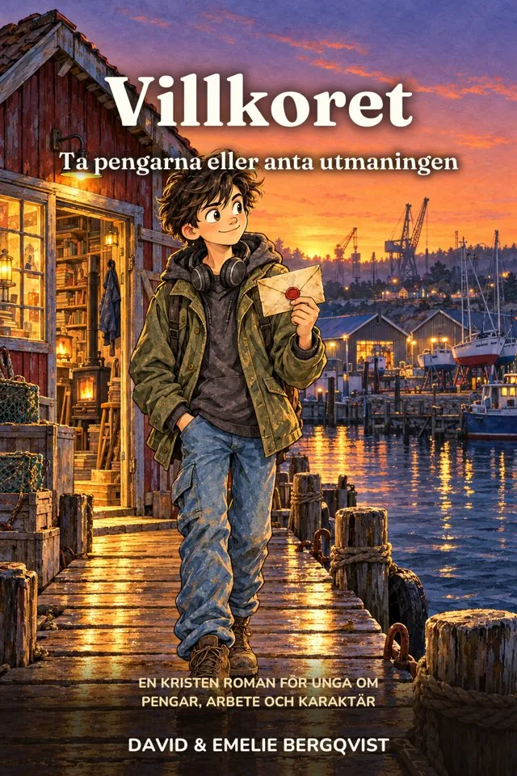
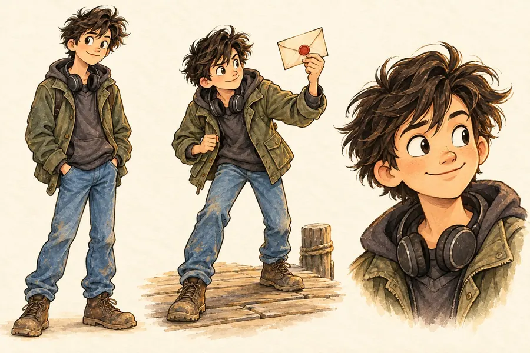

Ta pengarna i dag, eller klara fem villkor under ett år för att få ”resten”. En ungdomsroman om arbete, pengar och den sortens karaktär som klarar av att bära rikedom.

Alex Moberg, 17 år, ärver efter sin gammelmorbror Gösta, en ungkarl som levde enkelt i ett ombyggt båthus vid hamnen och alltid hade samma blåa arbetsjacka. Alla trodde att han inte ägde någonting.
Testamentet ger Alex ett val. Alternativ A: 250 000 kronor i dag. Alternativ B: ett år som lärling hos förvaltaren Edith Lagerlund, med fem villkor, ett i taget. Klarar han alla får han ”resten”. Misslyckas han med ett får han ingenting. Och familjen behöver pengarna nu.

Inget av det är teori. Varje villkor är en riktig uppgift med en tidsgräns, och den sortens lärdom som många av oss önskar att någon hade gett oss när vi var sjutton.
18 sidor att skriva ut för barn 6 till 10 år, så att samtalet kan börja vid köksbordet redan den här veckan.
Tonåringar 15 till 18 år, och föräldrar som vill ha något att prata med dem om. Den läses som en roman, inte som en kurs i privatekonomi.
Under 2028. Gå med i familjelistan, så berättar vi samma dag som den kommer.
Ja. Gösta citerar Ordspråksboken i marginalen på sina brev, och bokens egentliga fråga är vad pengar är till för. Berättelsen predikar aldrig.
På vår lista berättar vi om varje ny bok. Gratispaketet är gjort för barn 6 till 10 år, så det blir en present till yngre syskon, och du blir bland de första som får veta när Villkoret kommer.